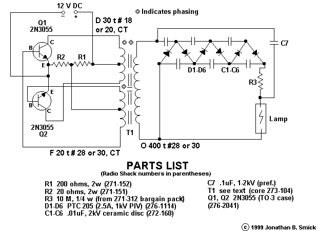

All content Copyright 1999, Jonathan B. Smick. All rights reserved. Reproduction of the contents of this page for non-commercial and non-profit purposes only is permitted if the following conditions are met:
DO NOT attempt to build this circuit unless you have prior knowledge of and experience in electronics safety, construction practices and techniques. This circuit produces possibly LETHAL voltages and currents. High frequency arcs can cause severe burns on contact. HID lamps can explode with great force if abused (or even in normal operation), resulting in the scattering of hot particles of glass/quartz of temps. of 1000 Degrees Centigrade or more. HID lamps produce substantial heat; do not operate in combustible environments or near combustible materials. Do not stare at the light directly, eye damage can result. Do not operate HID lamps whose outer bulb has been damaged, or broken; lamp explosion or exposure to dangerous shortwave UV radiation can result. The author of this article cannot be held liable for any injury, loss of life or limb, or property damage whether resulting from the proper use or misapplication of the information contained herein, nor for any damages, incidental or consequential, whether caused by accidental or intentional use, misuse, or ignorance of the safety concepts and design principles contained herein.
Perhaps the best thing about this circuit is that it can be built with almost all Radio Shack parts. This circuit does require a homemade transformer. This transformer is not hard to make, just a little tedious for hand winding. Because this circuit gives the lamp high frequency AC (except during starting), none of the limitations associated with DC-output supplies apply (i.e., not using certain types of HID's, which cannot tolerate DC operation).

COMPLETELY REVISED AND UPDATED 11/21/99
The circuit as shown in the above schematic was originally designed for use with the Philips 50w metal halide lamp, but will also operate 40/50w mercury lamps as well, without modifications (although the starting circuit, D1-D6, C1-C6, and R3, is not needed and can be omitted for use with the mercury lamp). C7 is also not absolutely needed for the mercury lamp and can be left out, although it is recommended to use it (in series with the lamp) anyway (it helps limit the current, along with the airgap in the core of T1).
HPS (High Pressure Sodium) lamps of 35-50w will also work with this circuit, although the turns ratio on T1 may need to be adjusted to provide the proper operating voltage to the lamp (these generally need lower arc voltages than other HID's) and consequently, the starting circuit (diode voltage multiplier) would then need more sections to provide sufficient voltage to ionize the lamp with the lower transformer output voltage. This is easy to do, as all it entails is adding more "sections" (2 diodes and 2 caps per section) as needed to the multiplier stack, so that there will be from 750 Volts to 1kV DC output from it (open circuit) to start the lamp. (If it is desired to go higher than this on the starting voltage, use higher PIV rated diodes, [Not available from Radio Shack] or 2 or more RS 1kV units in series in each "leg" of the multiplier). I have started HPS lamps from as little as 480 Volts, so excessively high starting voltages shouldn't be necessary.
LPS (Low Pressure Sodium) lamps will work without the starting circuit either (as in the mercury lamp case) as the open-circuit from T1 is sufficient to start these. The wattage will need to be adjusted downward, however, as outlined below if using 18 or 35 watt lamps.
The starting circuit concept is thus; when power is applied, there is an essentially infinite impedance at the lamp, since it has not yet ionized; this causes a DC voltage to build at the output of the multiplier, until the lamp's firing voltage is reached. The gas breaks down, and immediately provides a lower-impedance path for the transformer T1's HF AC output through the capacitor C7 and the lamp, than is presented by the multiplier string (whose caps charge up again and due to resistor R7, remain in a relatively charged and high-impedance state). Therefore, the multiplier is effectively bypassed during the lamp's operation by C7, and the lamp receives high frequency AC. As the lamp warms up the impedance of the path through it (and C7) decreases until it stabilizes at some low value at full brightness. The continued DC contribution of the multiplier string during lamp operation is negligible, due to it's high impedance relative to the path through C7 and the lamp. R3 limits the available output current from the multiplier string, as only voltage, not current, is needed for initiation of the lamp arc. This also ensures that only a minute amount of power is wasted in the multiplier string during lamp operation.
The remainder of this ballast is a conventional high-frequency Royer-type push-pull oscillator inverter with a ferrite core transformer. It is essentially similar to the inverters used to power small fluorescent lamps in pocket and camping lanterns, etc., except of course beefier. The oscillation frequency, with a 1mm airgap in the core of T1, is approximately 20 kHz under a heavy or full load, and quite stable, but somewhat variable and of lower frequency (~15-16 kHz) under light or no load (as in an open circuit condition or during lamp warmup). This characteristic is typical of simple inverter circuits, and doesn't impair operation in any way (more on this later). This frequency range can be adjusted to suit individual lamp/wattage requirements, to optimize efficiency, etc. by adjustment of T1's core airgap.
This ballast can be built by any acceptable method, on perfboard, a PC board or point-to-point. Layout is not critical, but high-frequency leads should be kept short, if at all possible, to minimize losses. Also, remember to provide sufficient separation between high- and low-voltage leads, and to case and/or ground. (At least a few millimeters).
T1 is a high-frequency ferrite-core transformer, which you will have to wind yourself. The cores are from the Radio Shack (273-104)rectangular "toroid snap-on chokes", which come two to a pack. You must make two "E"-core halves out of them. To do this, disassemble the ferrite from the plastic housings (this is easy- they just slide out). Do this for both chokes. You'll now have four "C" cores. Put a pair of these together, end-to-end, and you'll see that, voila, you have an "E" core half! Take "Super Glue" or similar cyanoacrylate cement and bond these two "C" cores together end-to-end, making sure not to use too much glue, but making a tight bond with minimal gap (maybe clamp them together somehow for the 30 sec. or 1 min. or so it takes for the glue to cure fully) to form one "E" core half. Make sure all edges and surfaces are as perfectly level and lined up as well as is possible. This can be tricky since the glue "grabs" instantly and repositioning if you make a mistake is, well, nearly impossible! Follow the same procedure with the other pair of "C" cores. You'll then have your two "E" core halves.
For a nice nylon bobbin to wind on, get a Radio Shack "Noise Eliminator Kit", no. 270-030, (this is used to remove alternator whine from the power lead of car radios). You need to disassemble the choke to get its bobbin. To do this, first determine which side of the core has "E" laminations and which has the "I's". Clamp the "E" side of the core in a vise, give the "I" core top piece a sharp rap from the end or side with a hammer (it is held on with epoxy) and it should come right off. (Be careful if anyone/thing is in the vicinity in case it flies off!) Now just pull out the bobbin from the "E" side of the core. If it is a tad stubborn, CAREFULLY (to avoid damaging the bobbin) place it on a flat surface, maybe between the parted jaws of your vise, for instance, supported by the bobbin flanges on one end and tap out the core half with a mallet and some sort of rod or bolt (so you're actually tapping the center post of the core only). Now that you have your bobbin, remove the tape and unwind the wire from it completely. The only other thing you have to do (and this is rather tedious, but necessary) is to carefully file out the sides of the inside center hole of the bobbin to allow your ferrite cores to fit (they won't unless you remove a little plastic from the inside of the bobbin, maybe .020" total (just a guess). Get a small, fine flat file (like the type used by modelers/hobbyists that comes in a "needle file" kit) and begin working on the side walls only of the bobbin's interior, periodically checking for fit with your cores. You want a tight, sliding fit, not a loose, sloppy one so don't remove too much plastic. Make certain the cores fit all the way in when you're done, there should be no taper in the interior hole of the bobbin, it must be flat and parallel (hint: file alternately from both sides so you don't get a taper). Once this slightly tedious task is complete, you are ready to wind your transformer! Using this method to get a "real" bobbin is vastly superior to the previous method I had detailed and have since removed from this site, as it made for a lot more work than necessary and was far less convenient and versatile. (With a bobbin you can now experiment much more easily with different windings and core airgaps, and can also rewind/replace the assembly much more easily should you need to without scrapping the whole transformer!)
Begin winding the secondary, or output (O)winding, using no. 30 AWG enameled wire (from, you guessed it!) Radio Shack's magnet wire 3-spool pack (278-1345). Recommendation: if you can get the "Heavy Nysol" insulated type of magnet wire from Mouser Electronics, it will have both better heat resistance and dielectric qualities than Radio Shack's wire and is far preferable. Mouser does not carry no. 30 AWG but they do have no. 28 AWG which is just fine. Try to wind your secondary fairly neatly, closewound (wires side-by-side, in contact). This is easy if you keep the wire feeding off the spool in tension with one hand and use your thumb on the other hand to hold down the already-wound turns. Avoid kinks at all costs, but a few overlapped or otherwise scramble-wound turns are ok (just don't get TOO sloppy). I have found it unnecessary to use an insulating tape to divide the layers of the secondary (e.g. between each layer of winding), as was outlined here prior to this update, although it is imperative you do insulate the three windings from each other. I have found that Teflon pipe "dope" tape is excellent for the purpose- it is thin and stretches to conform to irregular surfaces yet resists heat and has high dielectric strength and low loss at high frequency. At any rate, for the secondary or output winding you simply need to wind enough layers (generally 7 or so) to give a total of 400 or so turns (not particularly critical, although optimization for your particular application is advised). Each layer can be directly on top of the previous one. Overwrap the whole output winding with several TIGHT layers of Teflon, secured with Scotch tape.
Then comes the primaries, or drive and feedback windings! These are few turns, each in one layer, so not bad at all. Wind the drive (D) winding first, of no. 18 or 20 AWG enameled, (again, Nysol wire is preferred) 15 turns, then loop over or otherwise leave a long center-tap lead, then another 15 turns, closewound and placed over the center of the output winding, to give a 30-turn center-tapped winding. Twist the leads from the center taps together. Secure the winding with tape, and put a layer of Teflon over it. Now do the feedback (F) winding, in the same manner, only this is no. 28 or 30 like the output was and is 10 and 10 turns, for a 20-turn center-tapped winding. Each 10 turn winding of this should be centered on the Drive winding's 15-turn halves. Secure with tape and cover with several layers of Teflon. Then overwrap the whole winding assembly with a tight layer of Scotch tape. Assemble both "E" core halves on the bobbin, with an airgap between the halves of the core. This airgap serves two functions: it limits the current delivered to the lamp thus providing the "ballasting" function, and it varies the resonant frequency of the transformer, depending on the gap spacing (larger gap = higher frequency due to less inductance of the core - simple!) A spacer of the appropriate thickness, made of some kind of cardboard or plastic and inserted between the two core halves in the center of the bobbin's hole may be needed. A "ballpark" gap to start with would be 1 mm. Your transformer is now complete although experimenting with the gap setting is necessary and will be covered later.
The details on the rest of the parts required for this project are as follows:
Q1 and Q2 should preferably be something more substantial than '3055's. Don't take too literally the published specs for the 2N3055 as concerns Pdiss (115 w) and Ice (15 A), these are in my experience fanciful ratings that might be achieved if you used cryogenic cooling! It seems that at 2A or so collector current per unit they will run ok if adequately heatsunk; much more than this and you are asking for a meltdown in short order no matter how good your heatsink is.
Nevertheless, any transistors used still need adequate thermal conducting mass in their heatsink for proper longevity (keep in mind that heat from close proximity to the lamp is a factor, after all, heat is heat, regardless of source!) This means don't use those pressed, aluminum sheet metal "miniboxes" or the like as a chassis/heat sink alone (without supplementary heatsinks), it is far better to use a diecast aluminum box, which is thicker and has adequate thermal mass- this way you don't necessarily need separate heat sinks (use the box as enclosure/heat sink), which keeps the size nice and compact. In using the box as a heatsink, remember, the box itself (rather than the lid) has more mass, so mount your transistors there. Don't forget mica washers and thermal conducting grease (RS # 276-1372)under each unit, and the proper insulated hardware (the cases of most TO-3 transistors are common to the collectors). Radio Shack has complete TO-3 mounting kits with mica washers, cat. no. 276-1371. With reasonable heatsinking, Q1 and Q2 should be comfortably warm, NOT too hot to touch, after several minutes of operation.
Assuming you've wired the circuit correctly, you should have no problems in powering it up. If it won't oscillate, disconnect power and reverse the connections to ONE outer set of leads ONLY (don't do both windings, and leave the center taps as is!) of either the drive or feedback windings.
Don't operate the circuit with no load for extended periods; it may be damaged. Do not operate with starting circuit connected but no load (lamp). The HV output will be excesive and will probably flash over somewhere and may damage/blow something. The lamp, if a metal halide or HPS, will start about 0.5 to 1 second after application of power (this delay caused by charging the multiplier stack to the ignition voltage of the lamp). If a larger airgap (of the order of 4-5mm)is used (higher frequency, remember?) this lag is eliminated, but output watts will be less. Mercury/LPS lamps will start instantly in any case.
The arc in many HID's (especially metal halide) may appear to "snake" or change colors or otherwise appear to be rather unstable. However, the circuit operates the lamp stably once it has warmed up. This arc instability is normal during warmup for high frequency operation of high pressure discharge lamps. Warmup is gradual, taking a few minutes as in 60 Hz operation, and relatively easy on the lamp. Current drain at 50 watts output and 12 volts in is about 6 amps. (No, this circuit is not "over 100%" efficient, although you may not need a FULL 50 w, due to the high frequency, to get full rated lumen output from the lamp. This would result in the illusion of "overunity" efficiency, but it just ain't so!)
This basic circuit is very versatile, not only for operating HID lamps or fluorescents, but a variety of other uses as well, with a few basic adaptations, to be outlined here.
For wattage reduction to power different types of lamps as mentioned below and elsewhere, you have a number of options. The most obvious and simple is to use less than 12 volts to power the circuit. You will have to determine the right voltage for your application experi- mentally as I have not as of yet had opportunity to work up a chart showing various outputs versus input voltage. There also may need to be changes to T1's secondary turns count if you do this. The circuit should oscillate at 6 volts in, maybe somewhat less.
Another possibility is to change the airgap in T1's core; this will also vary the frequency of oscillation as previously mentioned. A gap of 1mm seems to allow the most wattage and results in the lowest frequency (about 20 kHz under load, 15-16 kHz at no or light loadings). A gap of 4 or 5mm increases the freq. substantially, (exact value not yet measured but probably something of the order of 40-50 kHz) and reduces the output current as well (although output voltage does not seem to be affected as much as one might think, in fact, the circuit seems to "like" to be run at higher frequencies). The starter ignites the lamp instantly (no "lag" time) when the circuit is run a higher frequency, although this might be due to faster charging of the diode multiplier stack. In any case, DON'T try to adjust the core gap with the circuit energized; this may put unusual stresses on the components, and could be a shock hazard as well.
Yet another current-limiting method is to vary the value of C7, this can be done alone or in conjunction with variations in gap setting. Obviously, smaller values will result in lesser current output; make certain the voltage rating of the capacitor is sufficient.
An additional possibility (though maybe undesirable) is to put resistance in series with either the 12 volt supply lead or in series with each emitter lead of the transistors. The latter method is preferred, as each resistor has to carry only 1/2 the current. Also, the degenerative feedback produced when such "ballasting" resistance is introduced into the emitter circuit is desirable on two counts; it helps compensate for a mismatched/unbalanced pair of transistors, and it also reduces the possibility of "thermal runaway". Try a 1 ohm, 10 w wirewound, or 2 of these in parallel for 0.5 ohms at 20 w (these are available from Radio Shack). The only unfortunate consequence resulting from the use of resistors is that they dissipate, thus waste, some power. This may not be a major problem in certain specific applications, however.
As mentioned above, 50w MH and 40/50w mercury lamps work interchangeably on this circuit. Starter not needed for mercury.
Output voltage measured on this circuit (raw T1 output,without starter) was 245 V when rectified with a diode (a typical DMM won't give accurate AC readings at 20 kHz). However, it charged a 2 uF 400 Volt strobe capacitor (through a rectifier) to 520 Volts almost instantly- amazing that the cap didn't explode! Also, these tests were done on a weak battery, a full 12 V might give more. So we'll guesstimate the average output at about 275-300 VAC with 12 V in.
35 and 50w HPS lamps may need about a little more than half the number of output winding turns on T1, to give about half the open circuit voltage but possibly twice as many multiplier sections in the starter if this is done (a sextupler rather than a tripler). Most HPS lamps need about 50-55 Volts for the arc (when operating), therefore since the ballast open-circuit voltage should be around twice the lamp operating voltage (disregarding the needed HV starting pulse), you might assume that you would need about half the open circuit as mentioned above. In all cases expect to need about a kilovolt give-or-take to start any HPS reliably. At some point in the near future, I will be posting complete spec./data sheets on this site for all types of HID's, including HPS, so stay tuned!
18 watt LPS lamps, like with mercury, do not need the starter circuit, the peak open-circuit is enough to start these lamps. 35 watt LPS MIGHT need the starter, (their starting volts are a bit more than for 18-watters, of the order of 500 V); try and see. Of course, you'll need to reduce output wattage to the appropriate level for use with any HID/fluorescent lamp type rated less than 50 watts, by one or more of the methods outlined above.
Fluorescent lamps like the ordinary 40w Rapid Start (RS) and preheat 4-foot tubes, IF genuine 40 watters, (not energy-saving 25 or 34 watt lamps so common today) will start and operate on this circuit with no mods. needed. (Although they might be slightly overdriven, this won't really hurt them). Smaller lamps like these newfangled energy-saving things, and standard 30, 20 and lesser wattage lamps of all types will need to have the current output to them limited by the methods specified above. This circuit is capable, with 12V input and the starting voltage circuit, of starting ANY fluorescent lamp, even slimline! Without the starting circuit, it will probably start up to a 20 watt preheat, possibly a bit more, but I have not tried it this way on a fluorescent.
The new 35 watt automotive headlamp type metal halides (Types D2R and D2S)will work on this circuit but require higher starting voltage due to a Xenon starting gas fill rather than the Argon used in general lighting service type metal halides. Xenon has a higher ionization potential than Argon, thus these lamps need something like 6-20 kV to reliably be started. Their operating voltage, however, is similar to that of the general-service lamps; between about 75 to 100 volts. Either a multiplier having substantially more sections, or another method entirely may be needed to start these lamps. That is left up to the experimenter.
For powering xenon flash lamps/strobes, omit the starting circuit, as well as R3 and C7, and substitute the usual rectifier/energy storage capacitor/trigger circuit.
To power HeNe or other gas lasers, use the starter circuit as a DC multiplier (no C7 or R3) and use enough sections in it to give the required voltage (diodes may have to be higher PIV than the Radio Shack ones). Also, some sort of trigger (with greater output than from the multiplier, something like 5 kV or more) may be needed to start the laser. Don't forget the proper ballast resistor!
For certain types of neon tubing, or other miscellaneous gas discharge lamps there may need to be more sections on the multiplier, and/or more turns on T1's secondary. Some neons can use DC, so you could then use the multiplier without C7 or R3. In some cases a ballast resistor may be needed.
Feedback is appreciated, send comments, corrections, suggestions to jsmick@worldnet.att.net